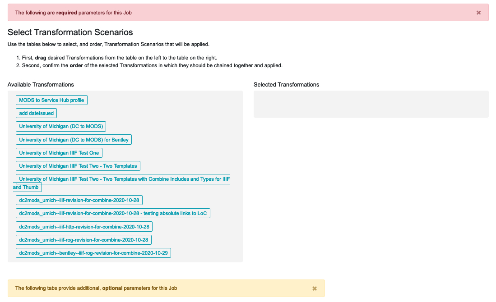

Transformation Jobs are a special category in Combine. All other Jobs merely copy and/or analyze Records, but Transformation Jobs actually alter a Record’s stored XML document.
This section covers how to run Transformation Jobs, building on the more general information in “Part 7: Running Jobs.”Just as Harvest Jobs require a pre-configured OAI Endpoint, Transformation Jobs require a pre-configured Transformation Scenario (see “Part 6: Configuration”) that will applied during the Transformation Job.
When the scenario is ready, go to a Record Group’s overview page and click the blue “Transform Job” button. You may need to scroll down the page to find the button. Once you click it, you will be taken to a “New Job” page.
On the New Job page, you first have the option of giving the Job a name and adding notes. Below that, indicated by a blue alert bar, is an option to show Jobs from other Record Groups. Clicking this option will expand the page to display all existing Jobs in your instance of Combine. The expanded display can be collapsed again by clicking the blue bar a second time. In most cases you will want to keep this view collapsed. If you have many Record Groups in Combine, the expanded view could be a very long list.
Below the blue bar is the first of two red alert bars that indicates required parameters. For this step you will need to select an Input Job or multiple Input Jobs for the Transformation Job. Each listed Job has a checkbox on the left which can be checked to include that Job in the transformation.
|
| Blue bar and first red bar sections of the Transformation new jobs page |
Below a second red alert bar is the next required step, selecting and ordering the Transformation Scenarios that will be performed for this Transformation Job:
|  |
| Selecting and ordering Transformation Scenarios to apply in a Transformation Job |
When the Transformation Job is run, the Records will be transformed by the selected Transformation Scenarios in the order you’ve arranged. Of course, one could also apply a series of Transformation Scenarios in a series of Transformation Jobs, applying one Transformation Scenario at a time. This might seem like a reasonable way to keep track of the transform process, but it would also result in several Transformation Jobs, duplicating the same set of Records each time and taking up more file storage space than necessary. The ability to select and order multiple Transformation scenarios within a single Job will create only one Transformation Job with the Records fully transformed into the desired state in one step, saving storage space and time.
Below this section you will find a gold alert bar for the ‘optional parameters’ that were explained in “Part 7: Running Jobs,” including “Record Input Filter,” “Validation Tests,” “Transform Identifier,” and “DPLA Bulk Data Compare.”
Once all of these configurations are set, you are ready to scroll to the bottom of the page and click the green “Run Transform Job” button to begin.
Next: Merging Records